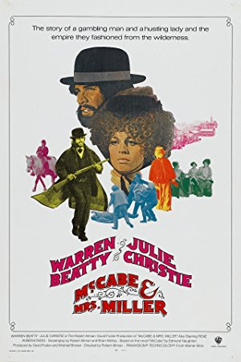

Enjoy Sunday nightat the movies!
Raleigh's oldest and finest nonprofit film society offers classic feature presentations monthly at the Rialto Theatre in Raleigh, NC.
Welcome to The Cinema, Inc.
One of the oldest continuing film societies in the nation, The Cinema, Inc. was founded in 1966 by a group of IBM workers using borrowed projection equipment that was installed in the Raleigh Little Theater. The organization was founded as a nonprofit whose purpose was “the presentation of films of educational, cultural, artistic and historical interest.” After about 15 years the organization moved to the Rialto in the city’s Five Points neighborhood. The group has been screening selections on the second Sunday of every month ever since. Each screening, which averages over 300 attendees, is accompanied by film notes emailed to members.
Announcing Our 53rd Season
Download the PDF brochure for our 2018-19 season, shown below with titles listed alphabetically, and send in your form with check or money order. Tickets are still $20 for twelve films. We cap membership based on seating capacity of the theater. The last few seasons have sold out, so don't wait! You will receive notification of membership. Passes will be mailed to members in August.
") Adventures of Prince Achmed, The (Die Abenteuer des Prinzen Achmed) (1926) Bigamist, The (1953) Breaking Away (1979) Children of Paradise (Les Enfants du Paradis) (1945) Ida (2013) Magnificent Ambersons, The (1942) Mulholland Drive (2001) Mysterious Geographic Explorations of Jasper Morello, The (2005) Nora's Will (Cinco días sin Nora) (2008) Ox-Bow Incident, The (1943) Sophie's Choice (1982) Trouble with Harry, The (1955) Wadjda (2012)
Adventures of Prince Achmed, The (Die Abenteuer des Prinzen Achmed) (1926) Bigamist, The (1953) Breaking Away (1979) Children of Paradise (Les Enfants du Paradis) (1945) Ida (2013) Magnificent Ambersons, The (1942) Mulholland Drive (2001) Mysterious Geographic Explorations of Jasper Morello, The (2005) Nora's Will (Cinco días sin Nora) (2008) Ox-Bow Incident, The (1943) Sophie's Choice (1982) Trouble with Harry, The (1955) Wadjda (2012)Screening NEXT
-

June 10, 2018Directed by Robert Altman; Starring Warren Beatty, Julie Christie, Rene Auberjonois, William Devane
McCabe & Mrs. Miller
USA, 1971, 120 min, Color, RThe film is brilliantly awkward…or, refreshingly authentic if one does not quite accept the glorious image of the American West the early Westerns portrayed. It’s set in a small mining town, a place looking for identity and a leader. The gambling gunslinger, John McCabe (Warren Beatty), believes he can give the town what it needs: a brand new brothel. McCabe runs the brothel as he wants until the classy whore Constance Miller (Julie Christie) arrives and offers him a deal he is forced to consider. Along comes a big mining company wanting to buy him out, but he reluctantly vows to defend his ground.
Read Roger Ebert's review of McCabe & Mrs. Miller at Great Movies. -
 July 8, 2018Directed by Dziga Vertov; Starring Mikhail Kaufman
July 8, 2018Directed by Dziga Vertov; Starring Mikhail Kaufman
Man with a Movie Camera (Chelovek s kino-apparatom)
Soviet Union, 1929, 68 min, B&W, Not Rated, Silent w/intertitles -
 August 12, 2018Directed by Charles Laughton; Starring Robert Mitchum, Shelley Winters, Lillian Gish, James Gleason
August 12, 2018Directed by Charles Laughton; Starring Robert Mitchum, Shelley Winters, Lillian Gish, James Gleason
The Night of the Hunter
USA, 1955, 92 min, B&W, Not Rated